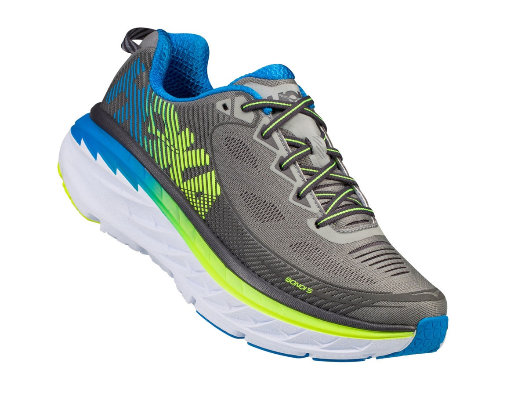

Hoka One One Features
 J-FRAME™ Stability with freedom Designed to combat overpronation, J-Frame™ innovation delivers extended support with a firmer foam on the medial side where the foot typically rolls inward.
CARBON FIBER PLATE Aggressive propulsion Designed to provide a propulsive ride, the carbon fiber plate curls under toes to deliver a smooth transition through the gait cycle.
HUBBLE® HEEL Effortlessly smooth transition Building on HOKA heritage, the extended HUBBLE® heel is designed to limit impact on the body and create smoother heel-to-toe transitions.